First Principles GrokBot Guide
Deconstruct xAI's real-time conversational agent from absolute ground truth physics and epistemology. Learn why it exists, what makes it radically unique, and build your own autonomous GrokBot.
Remember — Foundational Primitives & Recall
What is GrokBot?
An autonomous conversational agent powered by xAI's Grok Large Language Models (Grok-2 / Grok-2-mini / Grok-vision). It fuses massive reasoning parameter weights with a live telemetry pipeline from the X (formerly Twitter) platform.
The xAI Base Endpoint
xAI provides an OpenAI-compatible REST API at:
https://api.x.ai/v1
Authentication occurs via bearer token: XAI_API_KEY.
Core Primitives
• Model IDs: grok-2-latest, grok-2-mini
• Context Window: 128,000+ tokens
• Streaming: Server-Sent Events (SSE)
• Function Calling: Structured JSON Tool Calling
📋 Prerequisite Commands Recall
Run these three fundamental commands to verify your Python environment before launching GrokBot:
Understand — First Principles Deconstruction
What is First Principles Thinking in AI?
Reasoning by analogy asks: "How do others build chatbots? They take a frozen pretrained model, add strict safety refusals, and wrap it in a search scraper."
Reasoning from first principles asks: "What is the fundamental goal of an intelligent agent? To perceive real-world state changes at minimum latency, model causal dynamics truthfully, and communicate unfiltered reality to maximize human understanding."
Axiom 1: The Zero-Horizon Information Latency
Static LLM weights have an epistemic cut-off. Search engine scrapers suffer from 12–48 hour indexing lag. Grok connects directly to the X Real-Time Ingestion Firehose, processing eyewitness posts, financial disclosures, and scientific announcements seconds after they happen.
Axiom 2: Epistemic Truth vs Social Consensus
Most modern LLMs suffer from a heavy "Alignment Tax"—censoring truths that conflict with corporate PR. Grok's objective function is explicitly designed for maximum scientific rigor, mathematical honesty, and minimal preachy lecturing.
Axiom 3: The Colossus Compute Scaling Law
Grok is trained on xAI's Memphis Colossus Cluster (100,000+ liquid-cooled NVIDIA H100/H200 GPUs in a single RDMA fabric). Massive compute concentration eliminates training bottlenecks and produces superior mathematical and coding intuition.
First Principles Architecture: From Raw Signal to Verified Output
Real-world occurrence emits data packets onto X platform.
Zero-lag vector tokenization & community consensus ranking.
128k context reasoning with Hitchhiker's Guide wit & rigor.
Direct answers delivered without corporate lecturing.
Analyse — Why is GrokBot Radically Unique?
1. Live Alpha & Breaking Signals
When a vulnerability is disclosed, a crypto protocol exploited, or a regulatory filing submitted, discussions happen on X hours before news outlets publish summaries. GrokBot indexes the raw sentiment, code snippets, and counter-arguments in real time.
2. Zero "Preachiness" & Rebellion Mode
Traditional bots are trained with hyper-cautious refusal filters that frequently misinterpret benign technical queries as hazards. GrokBot answers directly, incorporates dry sarcastic wit when requested, and treats the user as an autonomous adult.
3. Native Multi-Modal Grounding
Grok-2 integrates multimodal visual understanding directly. It can ingest screenshots of code, complex charts, or satellite imagery from posts, analyzing the image semantics alongside text commentary.
4. OpenAI API Drop-in Compatibility
Unlike proprietary bespoke protocols, xAI built Grok to adhere to standard OpenAI REST specifications. You can switch any existing agent framework (LangChain, AutoGen, LlamaIndex, LiteLLM) simply by pointing base_url to xAI.
Comparative Analysis Matrix
| Feature / Dimension | ⚡ GrokBot (xAI) | Standard LLM (ChatGPT / Claude) | Search Synthesizers (Perplexity) |
|---|---|---|---|
| Real-Time Data Source | X Live Firehose (Seconds) | Static Checkpoint + Web Scraping | Google/Bing Search Index |
| Information Latency | < 30 Seconds | Hours to Weeks | 1 to 12 Hours |
| Refusal / Preachiness Rate | Ultra Low (Truth-Centric) | High (Conservative Safety Filters) | Moderate |
| Tone & Humor | Witty, Edgy, Hitchhiker Style | Polite, Corporate Neutral | Concise Reference Style |
| Context Window | 128,000 Tokens | 128k - 200k Tokens | 32k - 64k Tokens |
| API Drop-in Integration | OpenAI Compatible (base_url swap) | Native SDKs | Proprietary REST |
Evaluate — Why Use GrokBot? Decision Framework
✅ When GrokBot is Irreplaceable
- Live Market & Crypto Arbitrage: Tracking instant developer sentiment, exploit announcements, and token sentiment shifts.
- Technical Deep-Dives: Asking direct engineering questions without receiving pre-canned safety disclaimers.
- Autonomous Social Media Agents: Interacting dynamically on platforms where fresh cultural context and humor are paramount.
- First-Principles Scientific Deduction: Cross-validating physics, code logic, and mathematical proofs.
⚠️ Engineering Trade-offs & Limitations
- API Quota Costs: xAI API credits must be purchased via
console.x.ai. - Noise in Live Social Ingestion: Social media feeds contain rumors; bot verification requires prompt grounding.
- Sarcastic Tone Management: In enterprise production apps, system prompts must explicitly mandate formal tone if humor is unwanted.
🎯 Interactive Suitability Evaluator
Select your project attributes to evaluate if GrokBot is the optimal choice for your workload:
Create — Install & Run Your GrokBot PoC
Initialize clean Python 3.10+ isolation to prevent dependency conflicts:
Install the lightweight client libraries:
Obtain your API Key from console.x.ai and store it securely:
A complete, first-principles streaming GrokBot with system prompt personality control:
[STATUS] Ready to deconstruct problems into first principles.
[TIP] Click a preset prompt below or type your custom prompt:
Install GrokBot on This Device
🐍 Track A — Python PoC (CLI)
The repo's runnable first-principles agent. It streams responses from the xAI API over the OpenAI-compatible protocol, and falls back to a deterministic simulation when no key is present — so it always runs.
- Zero hard dependency on a paid key to demo
- Streaming SSE output with a Grok system prompt
- Drop-in for any OpenAI SDK code path
🖥️ Track B — Grok Bot Desktop Agent
The agent that actually operates LinkedIn. Unlike a chat model, Grok Bot controls a persistent cloud computer, opens real browser tabs, signs in, and completes multi-step tasks in the background.
- Install the Grok Bot desktop app and sign in with your xAI account
- Connect credentials via the 1Password plugin, or enter them once in the on-screen form
- Add the Gmail, Google Calendar, Google Drive and Granola plugins
- Create named custom bots (see Custom bots & plugins)
⌨️ Track C — Grok CLI (`grok` / `agent`)
The official terminal coding agent. Two entrypoints into one native arm64 binary: grok for the interactive TUI and agent for headless runs. grok doctor reports 0 issues.
- OAuth login reused automatically from
~/.grok/auth.json - Adds
~/.grok/binto PATH and installs shell completions - No
sudo; writes only inside$HOME
How To Use It — Day-to-Day
Use the CLI
One-shot questions with streamed answers. Pass the prompt as an argument; the model is read from GROK_MODEL in .env.
Use the desktop agent
Talk to the bot in plain language. It will narrate each step, open the browser, and ask you to confirm before sending anything.
Example prompt used in this repo:
"Sign in to LinkedIn and pull the recruiter threads that still need a reply. Draft each answer in my voice and check with me before sending."
Safety rules
• Credentials go straight into the browser — they are never stored in chat.
• The agent reviews drafts with you before sending.
• 2FA / "Check your LinkedIn app" is expected and handled on screen.
• Every action is visible in the chat transcript.
✅ Verified run on this device
The local PoC was installed into ./venv and executed successfully. Because no XAI_API_KEY is stored in the repo, it produced its deterministic first-principles simulation - proving the install, imports, and entrypoint all work end to end.
Custom Bots & Plugin Stack
Active Grok Bot Roster: 20 Bots on 1 Shared Machine
9 Outreach & LinkedIn bots + 11 Jobs & Operations bots (including Chief of Staff coordinator). Each with its own desktop & chat.
LinkedIn Research
Reconnaissance bot. Reads a role, a client, or a hiring manager and builds context before you reply — market day-rate signals, IR35 status, stack fit.
LinkedIn YouTube Promote or Messages
Outbound bot. Turns your videos and posts into warm-touch messages and follow-ups so your profile keeps moving between contracts.
LinkedIn Contractor Responses
The workhorse. Signs in, scans recruiter threads, drafts replies in your voice with the matching CV link, and asks for confirmation before sending.
Connected plugins (grouped by purpose)
| Group | Plugin | What it unlocks | Status |
|---|---|---|---|
| Communication | Gmail | Read, draft and send email follow-ups to recruiters and clients | Added |
| Scheduling | Google Calendar | Offer real interview/call slots without double-booking | Added |
| Files & CVs | Google Drive | Host and share per-role CV variants | Added |
| Meetings | Granola | Capture recruiter/client call notes into the pipeline | Available |
| Credentials | 1Password | Share a dedicated vault instead of pasting passwords in chat | Connect |
Why Running LinkedIn Here Matters — and Must Be Near Real-Time
The first-principles income equation
Contract income ≈ (role supply) × (match precision) × (response speed)
Role supply and match precision are largely fixed by your skills and CV. Response speed is the only variable you fully control — and it is the one that decays fastest. A UK contract role can be shortlisted the same working day it is released. The recruiter sends InMails in parallel to a handful of contractors, then submits the first two or three credible CVs to the client. Every hour of latency silently deletes options.
Running LinkedIn inside Grok Bot — on the same computer that holds your CVs, calendar, and clearance evidence — collapses that latency from "when I next log in" to "the moment the message lands". The agent is not a notification tray. It is a standing human-in-the-loop responder that keeps every recruiter conversation warm.
Figures are directional benchmarks for the UK contract market, shown to illustrate the latency economics — not guarantees.
The UK-specific reasons speed is decisive
Inside / Outside IR35
Status changes the effective rate by 20–30%. A fast reply clarifies whether you will work via your Ltd company or an umbrella before the recruiter moves to the next name.
SC / BPSS / CNI clearance
Public-sector and CNI roles filter hard on active clearance. Stating "active SC, eligible to work in the UK" in the first reply removes the single biggest screening objection instantly.
Agency right-to-represent
Once an agency submits you to a client, other agencies usually cannot. Responding early keeps you in control of which agency represents you, rather than losing the role to a faster competitor.
Short notice, fast starts
UK contracts often start within 2–4 weeks. Recruiters screen availability first; a same-hour answer that confirms notice period beats a better CV that replies tomorrow.
Inbox volume and decay
Recruiters fire many InMails per role. Your inbox is a queue with a decay constant: threads you answer the same day stay alive; threads you answer three days later are already filled.
Per-role CV matching
The agent pulls the right CV variant from your CV library for each role, so a fast reply is also a precise reply — speed without relevance is just noise.
Manual checking vs. near-real-time agent
| Dimension | Manual / once-a-day | Grok Bot near real-time |
|---|---|---|
| Detection latency | Hours to days | Minutes — on the daily routine, continuously when running |
| Unanswered threads | Accumulate; buried under new InMails | Target is zero; the agent works the backlog daily |
| Reply quality | Rushed or generic | Consistent pitch, correct CV link, clearance stated |
| IR35 / rate clarity | Often deferred to a call | Clarified in the first reply |
| Right-to-represent risk | High — slow response loses the role | Low — first credible responder keeps control |
The Daily Recruiter Routine
The routine triggers automatically each UK business morning.
Grok Bot reads the LinkedIn messaging view, including threads filed under Other / Secondary, and lists every recruiter thread that still needs a reply.
Each thread is matched to the role-specific CV variant, e.g. cv_azure_platform_engineer.pdf from the CV library.
The agent drafts each reply using your pitch template and shows it for approval. Nothing is sent without your go-ahead.
Existing conversations (Denise, Yogya, Molly, Gurusha, …) get a follow-up so no thread decays while you are on a current contract.
The bot posts a transcript of what it did, so you can audit every message and keep the pipeline honest.
The Reply Template (Voice of a UK Azure Contractor)
Why it works
It answers the six questions every UK recruiter screens for — stack, scale, proof, clearance, eligibility, availability — before they have to ask.
Per-role CV variants
The CV link is swapped to match the role. The CV library lives at CVLauncher, with a different CV per specialism.
Speed + specificity
Because the agent replies within minutes, the message can afford to be detailed. Speed without relevance loses; relevant detail at speed wins.
Screenshot Gallery — The Full Run
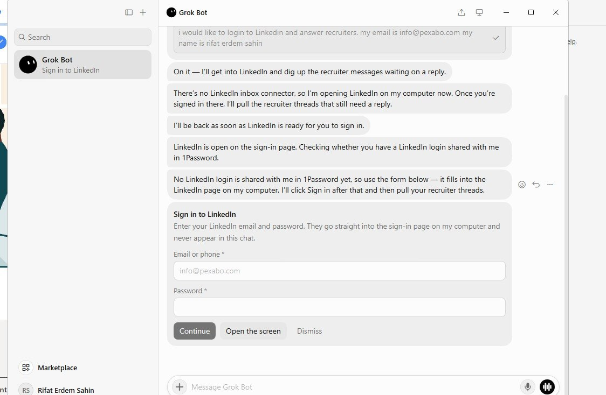
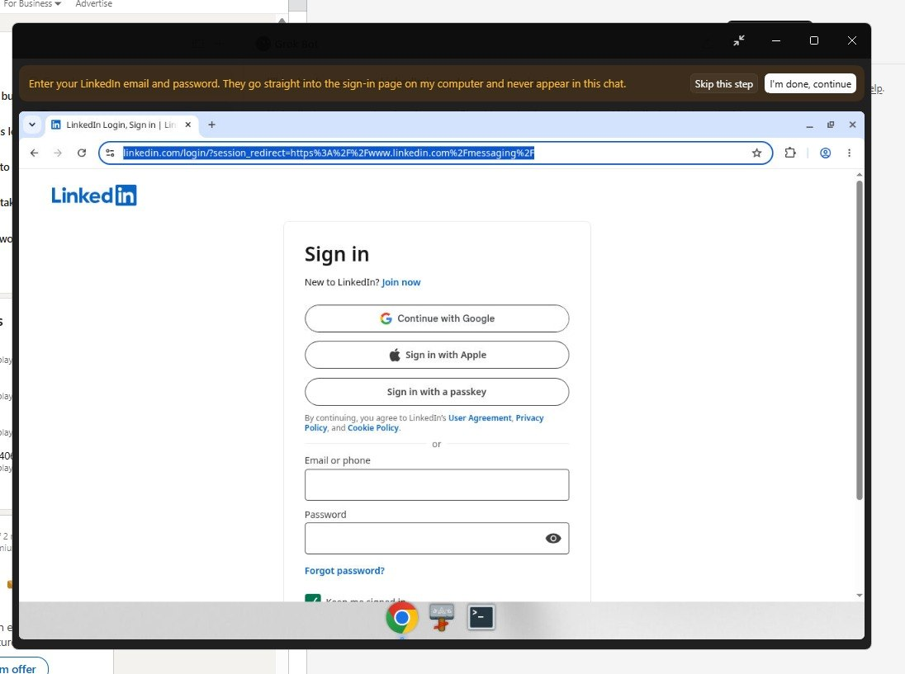
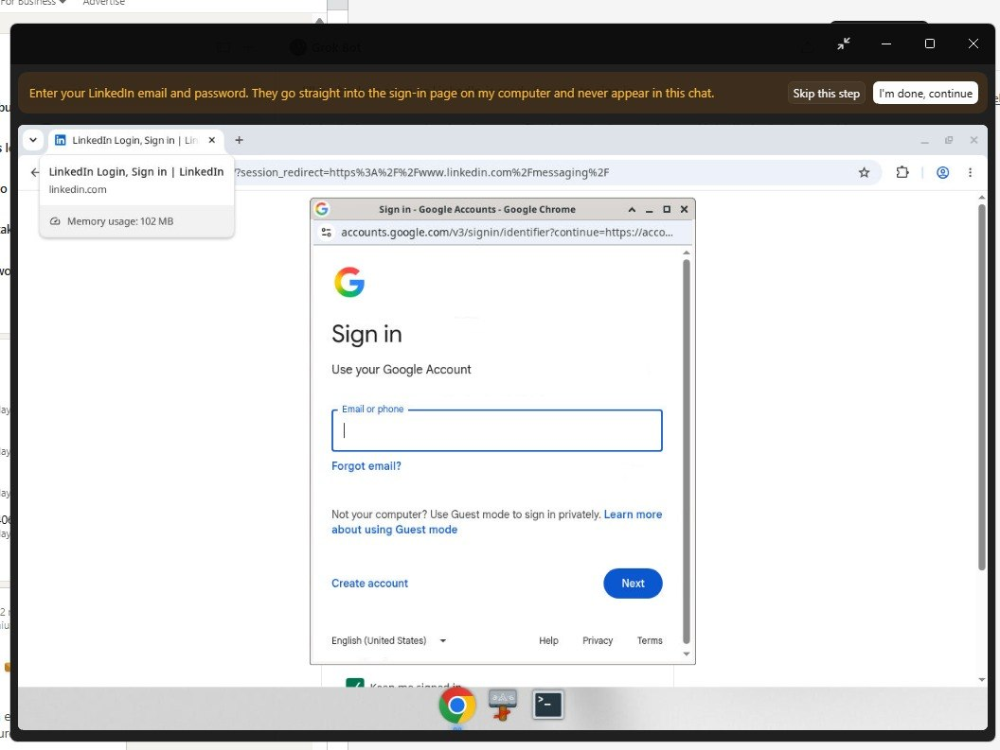
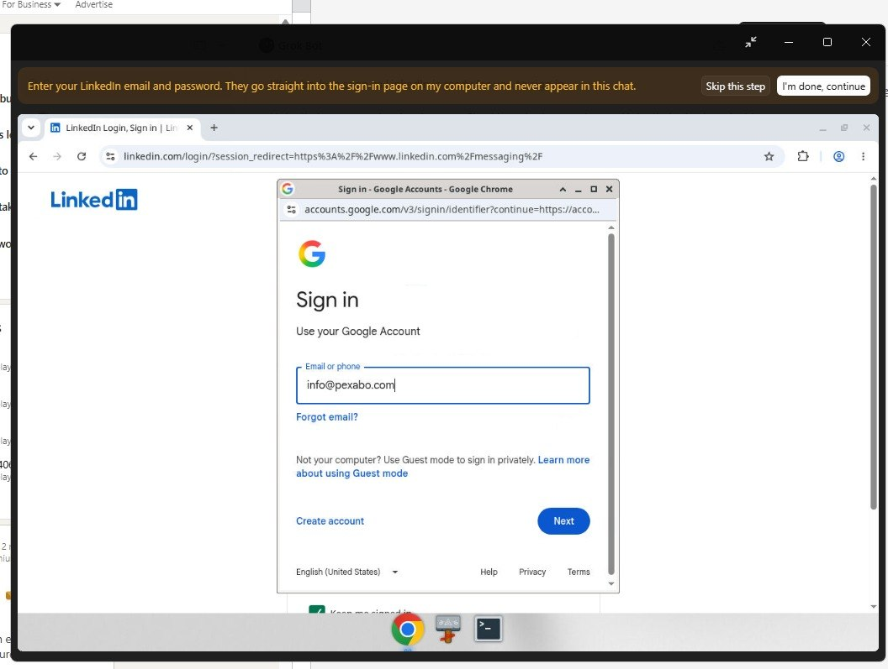
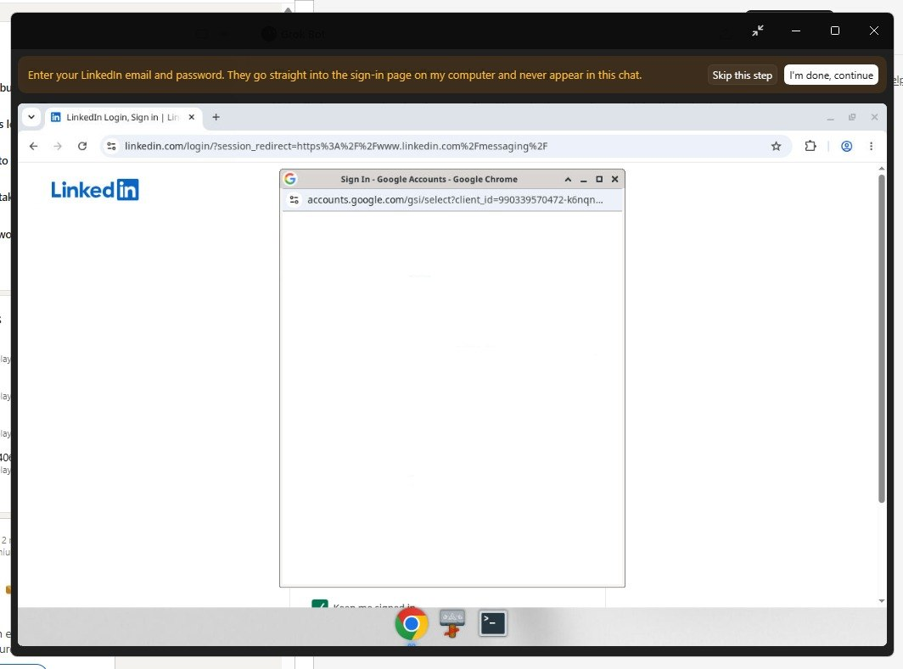
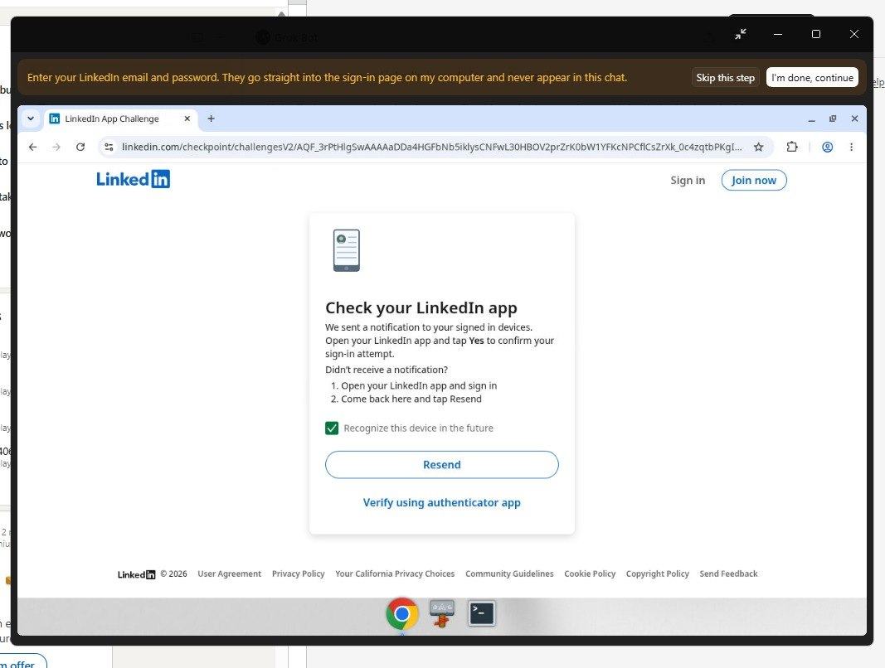
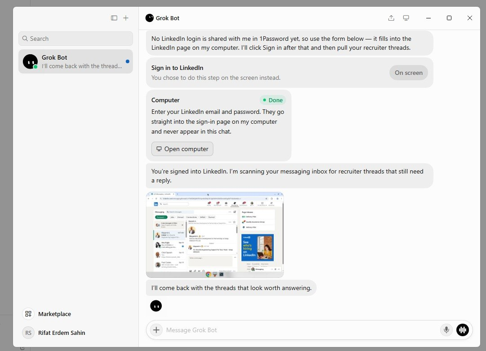
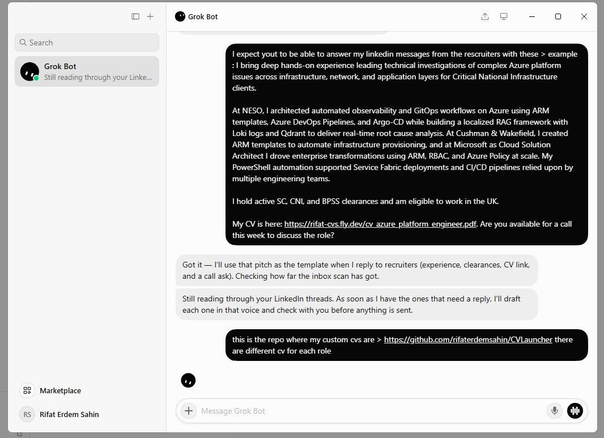
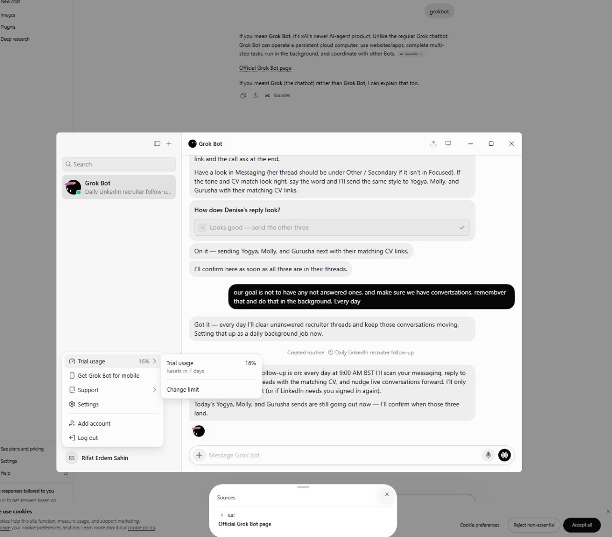
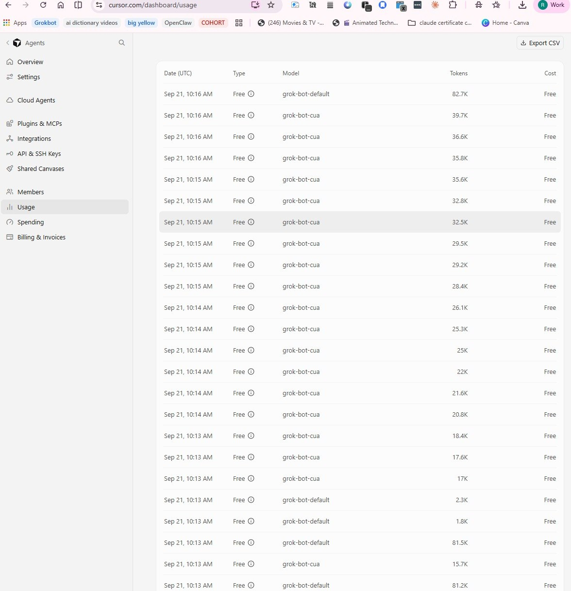
grok-bot-cua agent, so the automation cost is observable.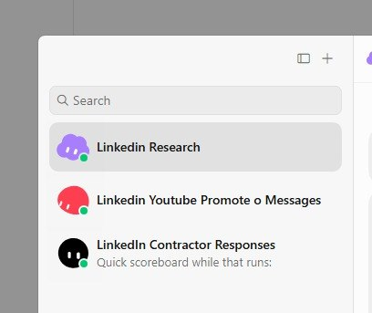
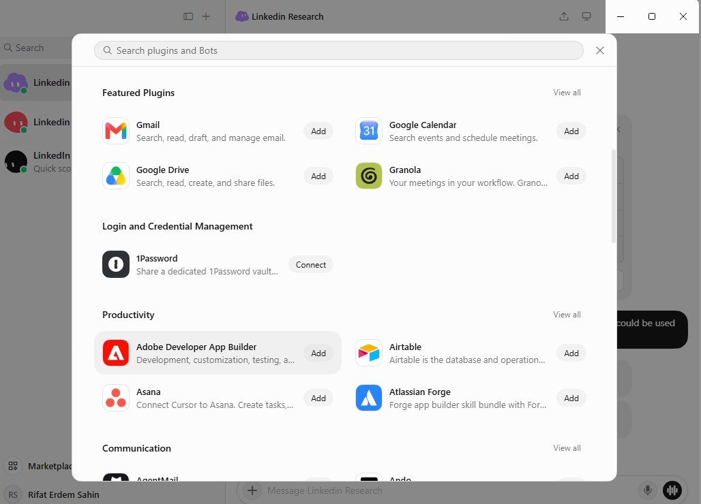
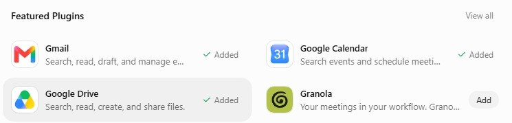
Installation & Usage Report
Installed
Local venv (openai 3.16.2, python-dotenv 1.2.3, requests 2.34.2) and the Grok CLI 1.0.40 at ~/.grok/bin.
Regrouped
src/ for code, images/ for screenshot evidence, docs/ for written reports, root for the site and config.
Renamed
All 14 numeric screenshots renamed to phase-numbered, descriptive filenames describing exactly what each one proves.